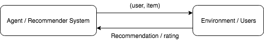
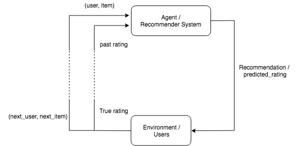
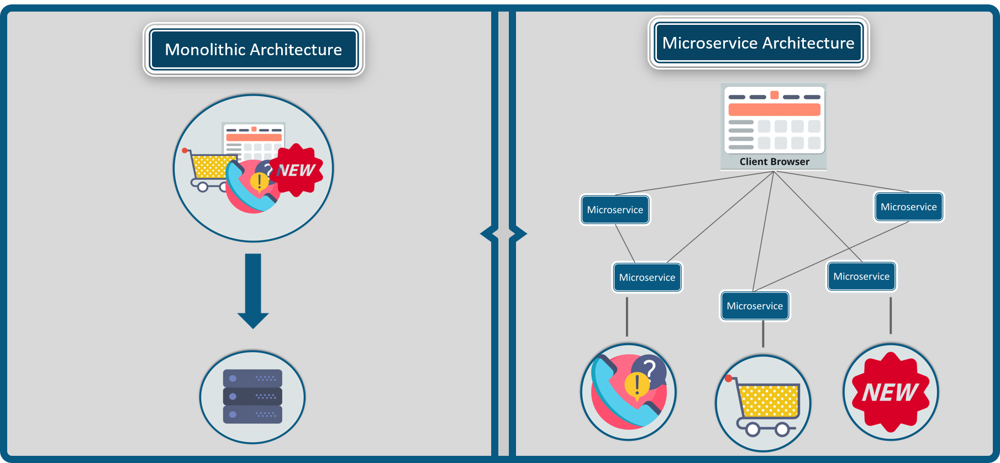
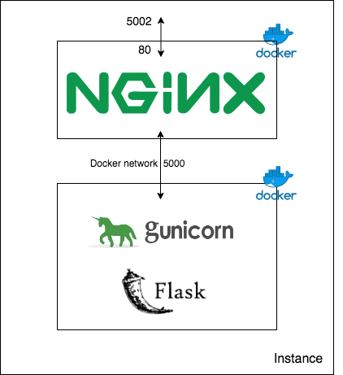

class: center, middle # Recommender Systems Thibault Allart --- # Agenda 1. Introduction to recommender systems 2. Matrix factorization 3. Deploying models in production 4. Deep recommender system with explicit feedback 5. Deep recommender system with implicit feedback 6. Introduction to Reinforcement Learning 7. Deep Reinforcement Learning 8. Soutenances --- class: center, middle # Last time --- # Previous lectures and labs Lectures: <br> http://cartan.int-evry.fr/IA316/lecture1.pdf <br> http://cartan.int-evry.fr/IA316/lecture2.pdf Labs: <br> http://cartan.int-evry.fr/IA316/lab1/<br> http://cartan.int-evry.fr/IA316/lab2/ --- # Matrix factorization .center[ <img src="img/mf.png" style="height: 260px;" /> ] <br> .center[ <div lang="latex"> \min_{U,V} \sum_{(u,i)\,\text{observés}} (R_{u,i}- (UV)_{u,i})^2 + \lambda \|U\|^2_F+ \lambda \|V\|^2_F </div> ] --- class: center, middle # Deploying models in production --- # The rating environment <br> .center[  ] --- # The rating environment .center[  ] --- # Your goal Implement a recommender system that perform well on this environment. --- # Check you can access the environment API Typing this url in your browser should print a beautifull <i>Hello World!</i> True IP will be given during class. ```http http://1.2.3.4 ``` You can also do it in command line with curl ```bash curl http://1.2.3.4 ``` --- # Predict Example ```http http://1.2.3.4/predict?user_id=aaaa&predicted_score=0.761 ``` Return: ```json {"next_item":158,"next_user":25,"rating":1} ``` Require: - user_id - predicted_score for previous (user, item) Return: - rating - next_user - next_item --- # Initialize environment and get <br> a new sample of historical data ```http http://1.2.3.4/reset?user_id=aaaa ``` - Restart the environment with new random values. - Return historical data already aligned --- # Calling an API with requests ```python import requests r = requests.get(url='http://1.2.3.4/predict', params={'user_id': aaaa, 'predicted_score': 0.761}) data = r.json() ``` <i>data</i> is then a dict containing the returned <i>key:values</i>. <br> Warning: You are all using the same server. <br> When looping add a small delay between two request. ```python from time import sleep sleep(0.05) ``` --- # Time to code Objective: - Implement an agent having good performances on this environment Remarks: - You will have to deal with new users and new items. - Start to think about production. Can you answer in less than 50ms? Steps: - Start with a baseline (random agent or constant agent) - Try simple algorithms from the previous lectures. - What are the isues ? solution ? - Implement a Neural Network version. - Could you do online learning ? --- # Starting example ```python import requests import numpy as np from time import sleep user_id = 'aaaa' base_url = "http://1.2.3.4" url_reset = base_url + "/reset" url_predict = base_url + "/predict" params = {'user_id': user_id} # Reset environment and get historical data r = requests.get(url=url_reset, params=params) data = r.json() nb_users = data['nb_users'] nb_items = data['nb_items'] user_history = data['user_history'] item_history = data['item_history'] rating_history = data['rating_history'] next_user = data['next_user'] next_item = data['next_item'] ``` --- # Looping example ```python # to do: Train an agent on historical data # model = ... prediction = 3 # model.predict(...) params['predicted_score'] = prediction nb_samples = 100 mse, mae = 0, 0 for i in range(nb_samples): sleep(0.05) # sleep 50 ms to let api breathe # send prediction and get next values to predict r = requests.get(url=url_predict, params=params) d = r.json() rating = d['rating'] print(f'user: {next_user}, item: {next_item}, '\ f'rating: {rating}, prediction: {prediction}') next_user = d['next_user'] next_item = d['next_item'] mse += (rating - prediction)**2 mae += abs(rating - prediction) print('mse: ', mse/nb_samples) print('mae: ', mae/nb_samples) ``` --- class: center, middle ## You've learned how to call an API. ## Let's see how to create one. --- # Creating and deploying an API We will create an API for our Recommender System that can be requested by users/environment. We will use the following technologies: - Flask - Web server - Nginx - uwsgi - Docker and Docker-compose --- # Creating an API with Flask ```python from flask import Flask app = Flask(__name__) @app.route("/") def hello(): return "Hello World!" if __name__ == '__main__': app.run(host='0.0.0.0', port=5000) ``` http://localhost:5000/ --- # Input and outputs ```python @app.route("/add", methods=['GET', 'POST']) def predict(): input1 = request.args.get('input1') input2 = request.args.get('input2') append = input1 + input2 sum = float(input1) + float(input2) d = {'sum': sum, 'append': append} return jsonify(d) ``` Calling - http://localhost:5000/add?input1=2&input2=3.1 Return - {"append":"23.1","sum":5.1} --- # Microservices .center[  ] --- # Example: Uber microservices .center[ <img src="img/Uber-micro-services.png" style="height: 450px;" /> ] --- # Docker Different part of an application may require different environment. .center[ <img src="img/docker_archi.png" style="height: 250px;" /> <img src="img/vm_archi.png" style="height: 250px;" /> ] --- # Dockerfile A simple example running ubuntu. ```bash FROM ubuntu:18.04 # keep container running CMD tail -f /dev/null ``` Build Docker image ```bash docker build -t my_image_name . ``` Start a container with this image ```bash docker run -d --name my_container_name my_image_name ``` Stop and remove ```bash docker stop my_container_name docker rm my_container_name docker rmi my_image_name ``` --- # Adding commands ```bash FROM ubuntu:18.04 RUN apt-get update && \ apt-get -y upgrade && \ apt-get install -y build-essential && \ apt-get install -y software-properties-common && \ apt-get install -y curl wget git htop vim # keep container running CMD tail -f /dev/null ``` --- # Flask API Dockerfile ```bash # Inherit from Python 3.6 image FROM python:3.6 # Set a working directory WORKDIR /usr/src # Copy requirements COPY requirements.txt . # Install requirements RUN pip install -r requirements.txt # Copy current folder COPY . . # Run python code CMD python app.py ``` --- # Web server .center[  ] --- # Docker-compose ```bash version: '3' services: flask_app: container_name: flask_app restart: always build: ./flask_app command: gunicorn app:app -w 1 -b :5000 nginx: container_name: nginx restart: always build: context: nginx args: - PROXY_PASS=http://flask_app:5000 ports: - "5002:80" depends_on: - flask_app ``` --- # Matrix factorization using embeddings .center[ <img src="img/rec_archi_1.svg" style="height: 450px;" /> ] --- # Adding non-linearity .center[ <img src="img/rec_archi_2.svg" style="height: 450px;" /> ] --- # Adding covariates .center[ <img src="img/rec_archi_3.svg" style="height: 450px;" /> ] --- # Practice Before attacking the environments you can practice with the excellent tutorial from Grisel and Ollion. <a href= https://github.com/m2dsupsdlclass/lectures-labs/blob/master/labs/03_neural_recsys/Explicit_Feedback_Neural_Recommender_System_rendered.ipynb > Explicit_Feedback_Neural_Recommender_System </a> <!-- <div lang="latex"> \frac{1+sin(x)}{y} </div> -->